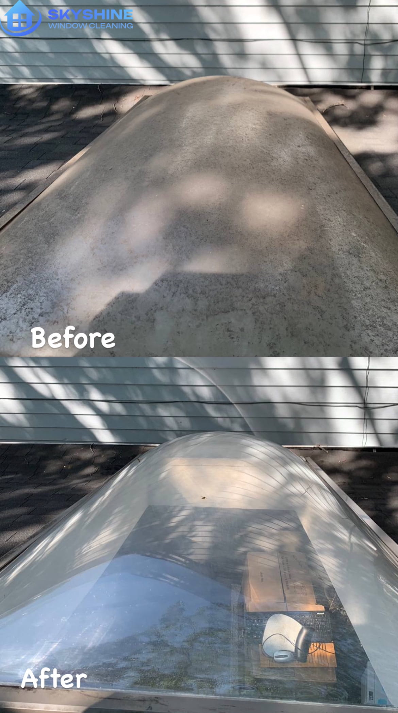
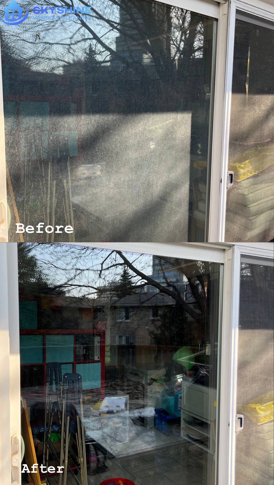
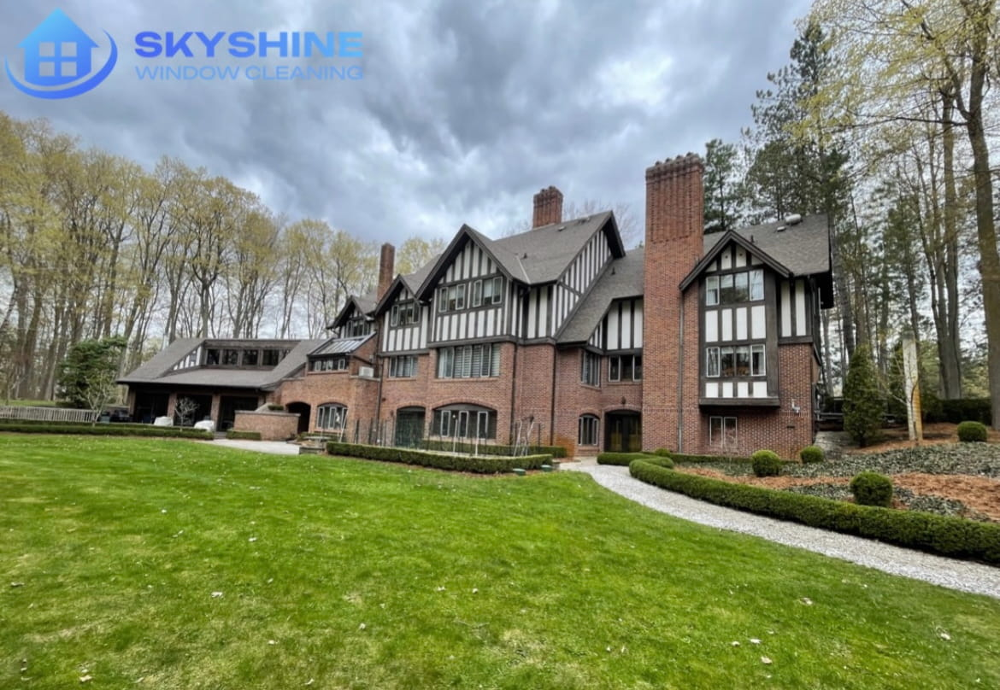
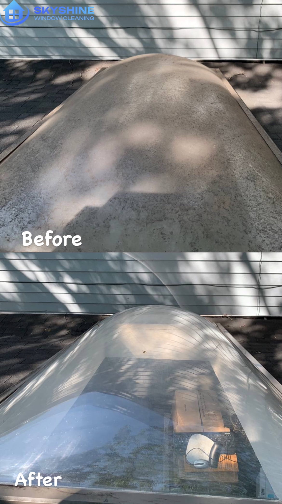
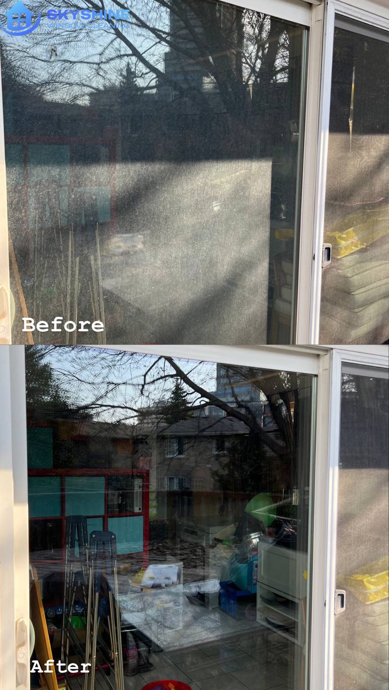
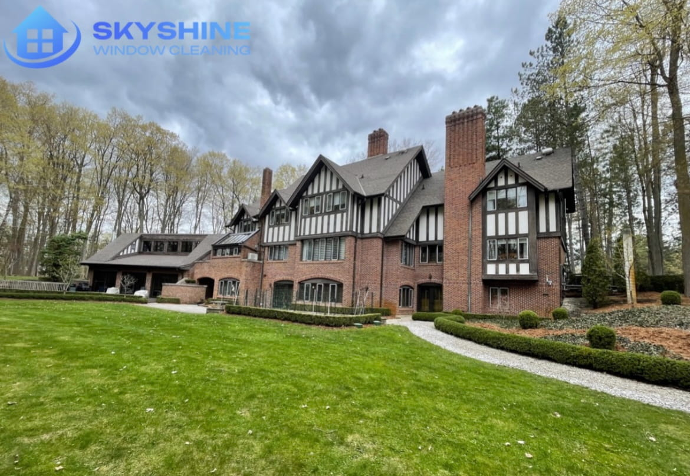

Skyshine Window Cleaning
We provide window cleaning services, gutter/eavestrough cleaning & repair services, power washing services and Christmas light installation.

About Us
Making cleanliness all around you is our primary mission
We are true professionals at what we do and we definitely know all the ways to clean and improve your space.
7 years of experience, highly trained and insured
We work with modern equipment and environmentally friendly means, so we guarantee effective work.
Our team is committed to the full satisfaction of each client and offers a personalized approach.
Our company has a wealth of experience and professional skills ensuring high quality work and the best result.
History of Skyshine Window Cleaning
Established over 7 years ago, Skyshine Window Cleaning was founded by Marian Pukailo with a vision to elevate the standard of home maintenance services in Toronto and GTA. With a profound understanding of customers needs and a commitment to excellence, we set out to provide comprehensive solutions that go beyond typical window cleaning.
Marian Pukailo
Founder of the company, CEO
Get a Fast QuoteServices
Window cleaning services
Window cleaning services
- — Interior & exterior window cleaning
- — All Types of Panes
- — Screen Washing
- — Track Cleaning
- — Harsh Stain Removal
- — Post-Construction Cleaning

Gutter and Eavestrough Cleaning & Repair Services
Gutter and Eavestrough Cleaning & Repair Services
- — Expert Inspection
- — Efficient Debris Removal
- — Precision Flushing
- — Downspout Care
- — Thorough System Inspection
- — Professional Repairs
- — Maintenance Tips
Power Washing services
Power Washing services
- — Detailed Assessment
- — Surface Preparation
- — High-Pressure Washing
- — Specialized Solutions
- — Gentle Cleaning
- — Comprehensive Coverage
- — Professional Finish
Christmas lights installation
Christmas lights installation
- — Custom Design & Planning
- — Quality Lighting Products
- — Professional Installation
- — Timely Removal & Storage
- — Maintenance & Repair
- — Safety & Compliance
- — Festive Atmosphere
Leaf guards installation
Leaf guards installation
- — Assessment
- — Measurement and Customization
- — Preparation
- — Installation
- — Sealing and Fastening
- — Testing
- — Clean up
- — Demonstration
- — Documentation
- — Follow-up
Our work
Christmas lights
Gutter and Eavestrough
Power and pressure washing
Window cleaning

   
   They talk about us
Google reviews

Anna Meus
Skyshine Window Cleaning provided an exceptional service from start to finish. Their team demonstrated a high level of professionalism and expertise throughout the entire process.
Anna Meus
Skyshine Window Cleaning provided an exceptional service from start to finish. Their team demonstrated a high level of professionalism and expertise throughout the entire process.

Places We Serve
Service area
- Hamilton
- Brampton
- Richmond Hill
- Oakville
- Mississauga
- Vaughan
- Markham
- Oshawa
*If you are outside our service area — write to us and we will help you out!